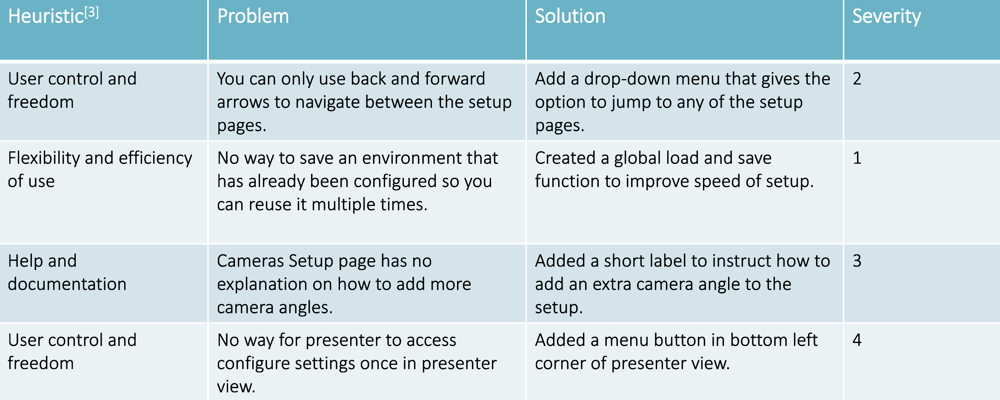
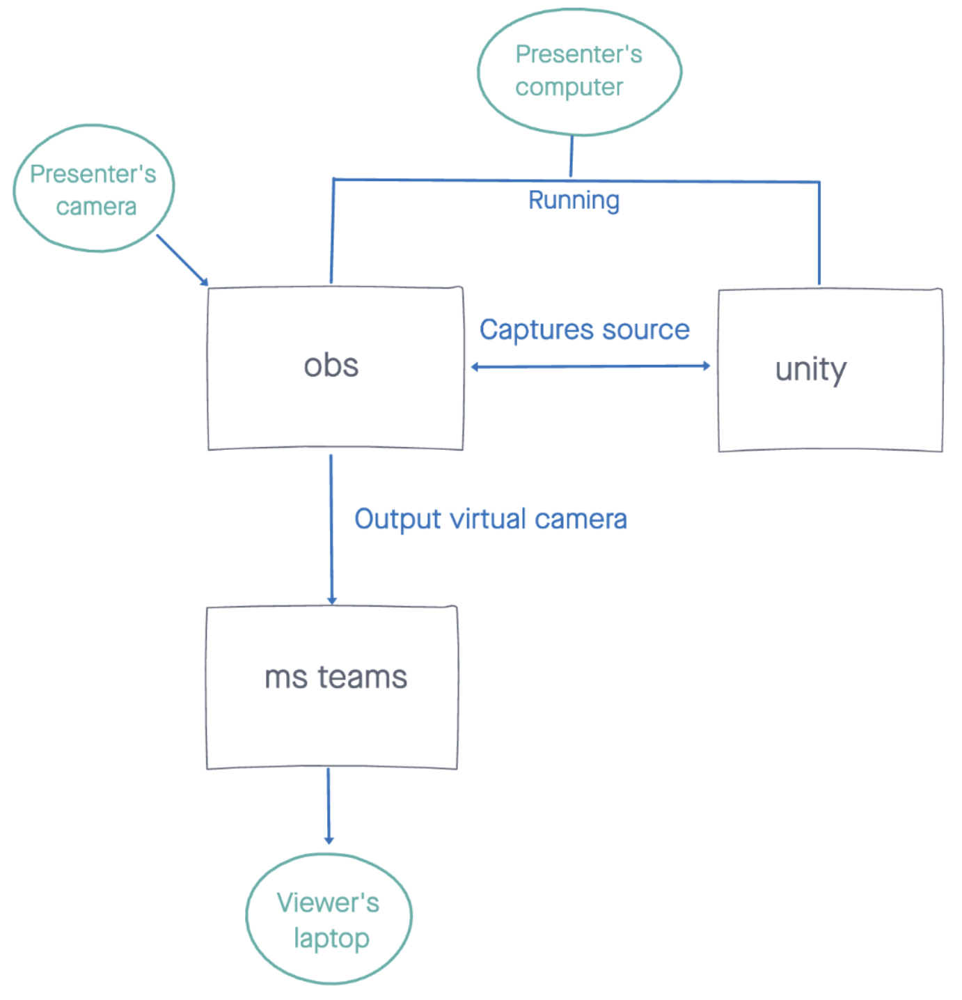

Run VPE.exe executable to start the program
The camera contains two scripts, the first for camera movement. There are two methods to enable and disable camera movement, which are used to disable movement while the user is in certain menus e.g. help menu. Camera movement and rotation sensitivity controls change the multiplier by which the camera is moved or rotated every frame. The camera movement script uses Unity’s rigidbody physics and mesh colliders on objects in the scene to prevent the camera escaping. The second script is for saving and restoring camera positions within the scene. It uses number keys 1 through 0, holding for 2 seconds to save a position and simply pressing it to restore. This was done to allow the user to assign hotkeys within OBS on the same key to simultaneously change OBS scenes, where positioning of presenters is arranged to work with that specific camera angle.
Following is a list of assets used in the Unity program portion of our project:
Over the past weeks starting from the beginning of term we have been building up our Human Computer Interaction skills. As a part of this process, we put a lot of time and effort into creating realistic personas and scenarios so that we could more accurately discover the requirements of our possible users. Personas and scenarios are a great way of representing users, and so this is why we wanted to develop these further. We came up with two personas, one for each type of user of our final product, and one scenario for each persona. We also based these personas partially on interviews we had with real potential user data we obtained from interviews with people.
We also created a Gantt chart this week to insure we stick to a plan and meet all our goals throughout this project.
We believe we are making good progress in regards to the preparation we need before the creation of our final project. The work above will surely help us when actually putting together a product that will be useful and easy to navigate for our potential users.
This week our team worked on the design aspect of the project. We first started with sketches of what we wanted the UI our final project to look like and asked potential users what the thought was good and what was not so good about the design. We took the criticism and used it to create improved sketches and then based our final prototype on the best sketches. We used Invision to create our sketches and Balsamiq to create our prototype.
We made sure to evaluate our final design against Nielsen’s 10 usability heuristics so that we could improve its usability even further.

Over the past weeks we have had many meetings with our client Dean Mohammedally (UCL) and we have had one meeting with our client John McNamara (IBM). We also met with some potential users. With both our clients and potential users the central reason for our meetings was to discover what they each wanted the final product of this project to do.
We got conflicting ideas and requirements from both clients: Dean wanted our final product to essentially be an overlay of someone onto a 3D environment whereas John wanted each person using the platform to be an avatar, where avatars could interact with each other.
Since these requirements did not match up, we attempted to find a happy medium in our project: the lecturer’s camera could capture them and place them in a 3D environment but with added interactivity, for example slides could be put on a board beside the person in the environment, and also hopefully students could interact with the lecturer in a similar way to the way they can now on a platform like Zoom.
After these many meetings, we finalised our MOSCOW list.
This MOSCOW list gives us a clear set of goals to achieve in our project and also gives us a good starting point. We discovered the most important goals of our clients and users in order for us to keep on track. In general, we believe our progress is good.
This week we worked on drawing a diagram of the system architecture for our project. After meeting with our TA for advice, we were able to produce a rough diagram for this:

Essentially, the presenter will be running Unity and OBS on their computer. Their camera will be streaming to OBS and Unity will capture the camera view and render it into the 3D environment chosen. Then OBS will capture this view of the environment and stream it into MS Teams where the viewer can join this meeting a view this environment.
This week we also started delving into learning how to use Unity. We did this in part by watching the videos in this series:
Brackeys - How to make a video game in Unity
We investigated several libraries to achieve capturing the user’s desktop and displaying it in the environment. We decided on uDesktopDuplication which allows us to interface with DirectX graphics API and display the desktop as a game texture. It is open source and uses an MIT license, allowing us to use it in our project.
This week we prepared for our upcoming elevator pitch presentation. Our presentation was centered around a demonstration of our progress so far. We had created a grand lecture theatre environment, with a desktop capture board. As an example of a scene manipulation feature, we added lights that can be turned on and off in the environment. Since we did not yet have physical green screens, we used a commercial software, “chromacam.me”, to algorithmically remove our real background and replace with a solid green background and place us in the scene.
This week we started on creating more 3D environments. We investigated available assets on the Unity Asset Store to use in our project. Some of the things we had to learn about was the creation, movement, rotation, and scaling of different objects so they fit in the scene seamlessly.
We brainstormed methods to handle multiple presenters in a scene and started learning about socket connections for a direct webcam video streaming based solution.
This week we developed a two-way video communication prototype in python using sockets. This was one of the possible solutions to our multiple presenters requirement. However, given the use of sockets would require port forwarding on the part of the clients, we will likely explore an alternative solution, possibly involving peer to peer.
Progressing on last week’s work, we learned to make the environments we created look more natural. We learnt about creating materials, prefabs, and scaling materials to make objects look more realistic.
We started to research how to use the different types of lighting (directional light, point light, spotlight) in the best way possible to showcase our scenes. This also involved learning about baking to make lighting look more lifelike. Lastly, we investigated including skyboxes into some scenes with windows to create more of an atmosphere in those environments.
We received a new feature request from one of our clients: algorithmic background removal. We began looking into available solutions for this. Additionally, we started looking into WebRTC as a solution for our multiple presenters feature.
Next step of progression in Unity was to start creating the main UI to help navigate people through to their chosen scene. We had to do more research on creating UIs in Unity and the use of C# scripting in to be able to tackle this area of the project effectively. We spent this week doing that research to ensure the best possible product could be produced.
We designed a system for ‘optional’ scene components that can be toggled by users. This is planned to be expanded later for specific configuration of optional components. It works by placing GameObjects into parent object, then the setup script iterates through children of the parent object to find them. This way the setup script can generate options on the UI for the user to toggle optional components. Each child object has a script which defines its properties like the name displayed in the UI. During UI generation, a dictionary stores relations between toggles and the optional component which they should control. There were some problems with placement of generated UI components, and scaling at lower resolutions (development was using 4k), these were resolved with some unity documentation research.
Moving on from last week’s research, we created the Welcome UI which contained a background, a title, and a button to bring the user to the scene selection. This involved learning the most efficient way to use buttons to navigate between canvases by using the onClick event options which are offered in the Unity inspector of button objects.
We also started working on the Scene Selection UI by creating a toggle group, meaning only one scene could be selected at a time. We also changed the default tick box toggle interface to look more aesthetic and fit in more with the style of our project.
This week as part of research for the background removal we read the paper “Real-Time High-Resolution Background Matting” arXiv:2012.07810. Requirement of a dedicated GPU and poor performance in initial testing pushed us away from this approach.
We committed to using Web RTC for the multiple presenters feature. Although this would require a server for authentication, the peer-to-peer advantage and no need for port forwarding seemed worth this trade-off. We produced an initial implementation of a Web RTC based peer to peer server.
We created a script for camera controls. Simple movement uses WASD keys like in most video games, and arrow keys for directional rotation, or ‘looking’. Arrow keys were used instead of mouse movement for finer control and to allow the user to click things with their mouse without first having to escape the movement control. Shift and Control keys were set to move camera vertically up and down respectively, for better control ability. Since the concept of our software is to work in conjunction with OBS, where video feeds of presenters are overlayed over our environments, fine control is needed over the camera in the scene to produce realistic results. For this, we added controls to increase and decrease the sensitivity of the movement controls, so that uses can maneuver the camera with precision. A bug was found – default sensitivity of movement depends on the frame rate of the program, dependent on the user’s hardware power, as updates to position in reaction to key presses is processed every frame. This bug however is not a problem as users can still adjust the movement sensitivity accordingly to compensate.
On the background removal side of development, we began looking into google bodypix.js library. We produced an initial prototype which seemed promising but was limited to 5-10 fps. Prototype was rebuilt and merged with the video call site in JS for better performance.
This week, we worked on more visual aspects of the UI, changing colours and fonts to match the aesthetic we are going for. We tried out the UI so far on our different screens with different resolutions and realised that the interface would go partly offscreen or be much too small on certain screens, so we had to understand scaling. We scaled everything using the canvas scaler and also using anchoring so that no matter what shape or resolution the screen was, the elements would always be in the right place.
This week we worked on the main welcome screen UI. When the user selects an environment, a preview image is displayed, if they press next, the scene is loaded. We did this with a script that is attacked to each toggle. Later, we found that this script had a monitor, which we resolved by the end of the week. We also figured out how to make the toggle buttons into a scrollable panel so many scenes can be added without hassle. This was done after one of our clients expressed the need for it, and it helped in making our project more extensible. This week our client also said they needed some scenes to be renamed (classroom scene to be renamed exam room) and they also wanted a small lecture theatre scene to be added so we completed these requests too.
We further developed the video communication site with rigorous testing and debugging. Produced promising prototype for background removal in JS using google bodypix.
We used Unity’s rigidbody physics and mesh colliders on objects in the scene to prevent the camera escaping.
The next UI portion we worked on was the drop-down menu that would be visible once the user accessed their chosen scene. Firstly, we resolved the issue of creating the actual cog button. Then we managed to attach a script to this button which allowed a drop-down panel to appear when the cog was clicked and disappear when the cog was clicked again. The goal for next week is to fill this menu with various buttons.
We added the foundations of a save-load system by designing a serializable object to store necessary data. SaveObject contains the scene name, enabled optional components, and saved camera angles. The save and load methods in a new class SaveUtils were done next. SaveObjects are serialized to a json format using Unity’s JsonUtility, the files stored in the Unity persistent data storage location.
We also embedded the background removal code with the main video communication site.
This week a save menu was made, which is accessed from the dropdown menu. In it the user inputs a name for their save file. Necessary information is collected in the scene by SaveSceneSettings method of SaveUtils, serialized and saved to disk. For the load menu, a method ReadAvailableScenes was made in SaveUtils which reads the save folder location for files and returns a list of tuples containing the file name and name of the environment it contains. This is used to populate options in the load menu, which will be done next week.
Continuing with the previous week’s work, this week we populated our drop-down menu with the necessary buttons. We included one button for scene configuration, one button for help instructions and one button to add more presenters into the environment which opens a link to our web app. We continued by adding content to the help menu button. When this button is pressed a new panel opens up, giving the users exact instructions on how to navigate throughout the environment and also how to save camera angles so they can be accessed whenever the user wants. This page mainly consists of text, but it also contains png clipart images of keyboard keys that we created specially.
This week the load menu was completed. When user selects a save to load, the save name is stored to a static object LoadSettings, which allows us to pass information between Unity scenes. The scene is loaded, and load settings are detected. Saved camera angles are applied. The normal scene configuration UI toggles optional components depending on their state in the save file. The user still has a chance to change these toggles before proceeding to the presentation stage. The biggest challenge with this system was creating the load user interface which needed to generate dynamically depending on the options available, implemented using prefabs acting as templates that are instantiated and edited by the code. The second challenge was figuring out the method to pass data between scenes.
One of the final stages of development in the Unity app was to install the user interfaces and scripts throughout all the 3D scenes.
As we near the project deadlines, this week we focused on website contribution. We had to do a lot of writing for each section of the website. We also had to create many graphs and chart including a refined system architecture diagram, a site map and a use case diagram.
We also focused on finishing our individual reports, case study, 2 minute video and all other deliverables.
Copyright © UCL COMP0016 Team 30 2020/21